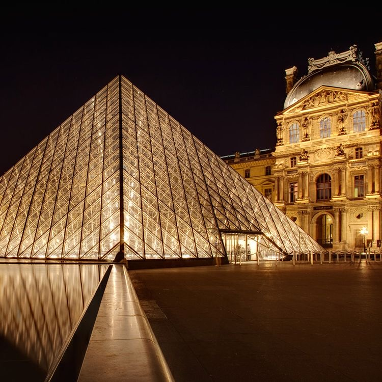
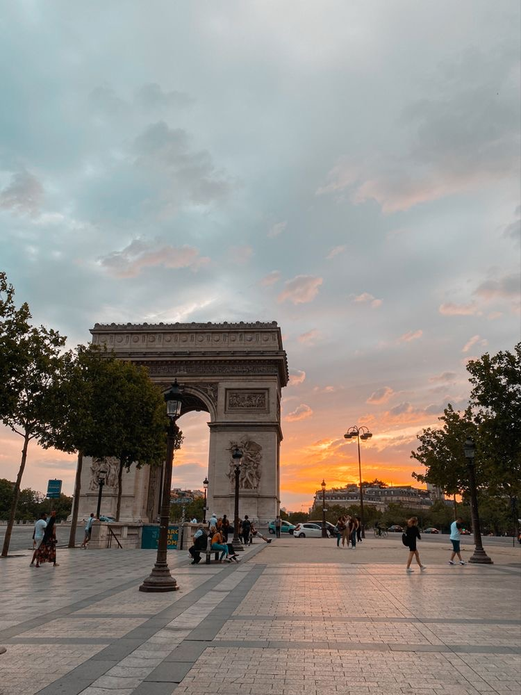
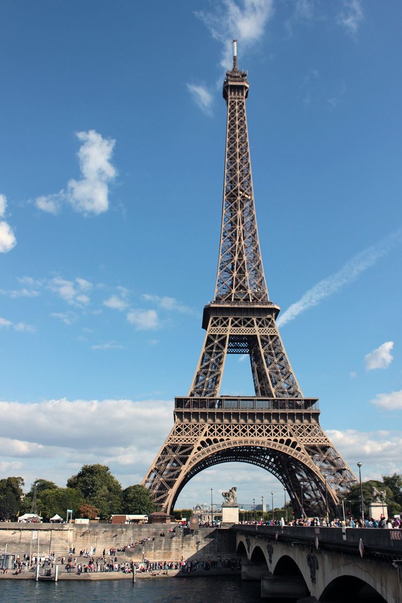
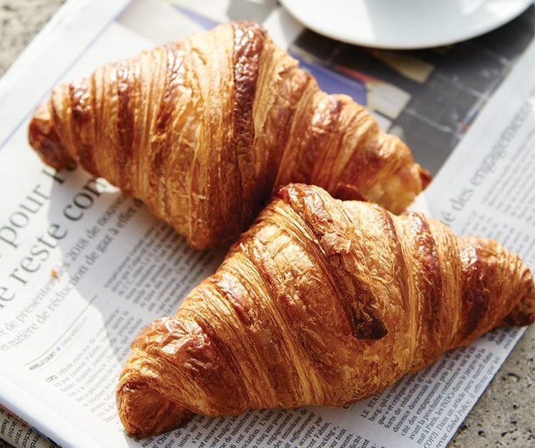
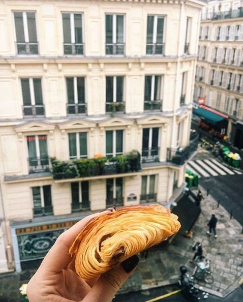

La France est une république constitutionnelle unitaire ayant un régime semi-présidentiel. La devise de la République est depuis 1875 « Liberté, Égalité, Fraternité » et son drapeau est constitué des trois couleurs nationales : bleu, blanc, rouge. Son hymne national est La Marseillaise, chant patriotique hérité de la Révolution française. Son principe constitutif est la démocratie : le « gouvernement du peuple, par le peuple et pour le peuple ». Elle a pour capitale Paris et pour langue officielle le français depuis 1539, remplaçant le latin. Ses monnaies sont l'euro depuis 2002 dans la majeure partie du pays et le franc Pacifique dans ses territoires de l'océan Pacifique. La France tire son nom des Francs, peuple germanique qui a institué les premiers fondements de son État sur les bases de la Gaule romaine. C'est au fil des siècles, par des guerres, des mariages politiques et des unions souveraines, que cet État monarchique et catholique va peu à peu constituer autour de lui une véritable fédération de provinces, qui finira par se cristalliser en une nation unique sous l’effet d’une politique d'uniformisation administrative et culturelle, portée à son aboutissement par la Révolution française et la fin du régime féodal. Du milieu du xvie siècle au milieu du xxe siècle, elle possède un vaste empire colonial. À partir des années 1950, elle est l'un des acteurs de la construction de l'Union européenne. Deuxième armée européenne derrière la Russie, troisième puissance nucléaire et spatiale mondiale6,7, cinquième puissance militaire mondiale8, l'un des cinq membres permanents du Conseil de sécurité des Nations unies et membre de l'OTAN, la France est également membre du G7, du G20, du Conseil de l'Europe, de la zone euro, de l'espace Schengen, de la commission de l'océan Indien, de la communauté du Pacifique, et abrite le siège du Conseil de l'Europe, de l'UNESCO, de l'OCDE, etc. Elle exerce ainsi une influence notable en matière politique, économique, militaire et culturelle, en Europe et dans le reste du monde, elle est classée en 2019 au premier rang mondial de l'indice Soft Power 30 grâce à sa vaste portée diplomatique, sa riche offre culturelle et de la forte maîtrise internationale du président de la République9. Seul pays au monde à exercer sa souveraineté sur des territoires répartis sur quatre océans et deux continents10,N 6, elle joue un important rôle géopolitique au niveau mondial, grâce à un réseau d'ambassades et de consulats étendu, le deuxième au monde derrière celui des États-Unis, et elle dispose de bases militaires sur tous les continents et de la troisième puissance nucléaire militaire mondiale. La France possède dans les mers la première zone économique exclusive au monde, à laquelle s'ajoute une extension du plateau continental de 579 000 km2 en 201511 et c'est un des premiers pays du monde pour la variété de ses milieux maritimes et leur biodiversité12. La France est, avec un PIB nominal de 2 775 milliards de dollars US en 2018 selon le FMI, la troisième économie européenne derrière l'Allemagne et le Royaume-Uni, ainsi que la sixième économie mondiale13. Malgré un taux de chômage relativement important, elle affiche un niveau de vie « très élevé » (24e au classement IDH en 2018). Elle figure parmi les chefs de file mondiaux dans les secteurs de l'agroalimentaire, de l'aéronautique, de l'automobile, du tourisme, du nucléaire, leader mondial dans le secteur du luxe. Au 1er janvier 2018, la population de la France est d'environ 67,8 millions d'habitants, selon les estimations publiées par l'Insee : 65 018 000 dans les régions métropolitaines, 2 169 000 dans les régions ultramarines et 608 200 dans les collectivités d'outre-mer et en Nouvelle-Calédonie.



 
La cuisine parisienne est réputée pour ses volailles, que l'on considère comme des spécialités qui étaient autrefois servies à la Cour de Louis XIV de France.
On trouve à Paris, le cochon généreux qui fournit le célèbre jambon de Paris4 (aussi appelé jambon blanc), consommé sous différentes formes ;
autant dans une assiette avec du beurre, que dans un croque-monsieur13.
Dans les pains parisiens, il y a la fameuse baguette, mais aussi le pain Briare et le pain Vexin4.
Côté pâtisseries, il y a le saint-honoré, la tarte Bourdaloue, l'opéra, les financiers, le mille-feuille et la plupart des pâtisseries faites à base de pâte à choux.
Beaucoup de ces desserts, notamment ceux composés de pâte à choux, ont été développés ou inventés dans la Pâtisserie de la rue de la Paix,
du grand chef parisien Marie-Antoine Carême, précurseur du principe de pâtisserie et confiserie14. On peut également citer la brioche de Nanterre.